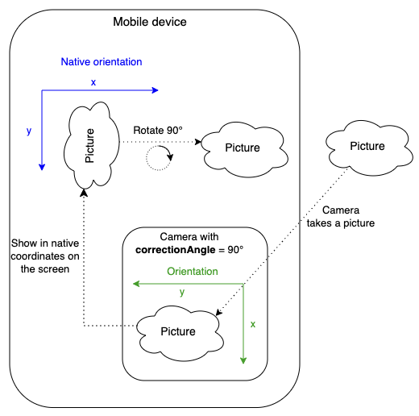

cameraDevice QML Value Type
Describes a camera device. More...
| Import Statement: | import QtMultimedia |
Properties
- correctionAngle : QtVideo::Rotation
(since 6.7) - description : string
- id : string
- isDefault : bool
- position : enumeration
- videoFormats : CameraFormat
Detailed Description
The cameraDevice value type describes the properties of a camera device that is connected to the system.
The list of camera devices can be queried from the MediaDevices type. To select a certain camera device set it as the device on Camera.
CaptureSession {
camera: Camera {
cameraDevice: mediaDevices.defaultVideoInput
}
}
MediaDevices {
id: mediaDevices
}
Property Documentation
correctionAngle : QtVideo::Rotation |
Returns the rotation angle needed to compensate for the physical camera rotation of the camera compared to its native orientation. In other words, the property represents the clockwise angle through which the output image needs to be rotated to be upright on the device screen in its native orientation. Since correctionAngle is relative to the native orientation, this value does not change with altering the device orientation (portrait/landscape). The correction angle may be non-zero mostly on Android, where native and camera orientations are defined by the manufacturer.

This property was introduced in Qt 6.7.
description : string |
Holds a human readable name of the camera.
Use this string to present the device to the user.
id : string |
Holds he device id of the camera
This is a unique ID to identify the camera and may not be human-readable.
isDefault : bool |
Is true if this is the default camera device.
position : enumeration |
Returns the physical position of the camera on the hardware system.
The returned value can be one of the following:
| Constant | Description |
|---|---|
cameraDevice.UnspecifiedPosition | The camera position is unspecified or unknown. |
cameraDevice.BackFace | The camera is on the back face of the system hardware. For example on a mobile device, it means it is on the opposite side to that of the screen. |
cameraDevice.FrontFace | The camera is on the front face of the system hardware. For example on a mobile device, it means it is on the same side as that of the screen. |
videoFormats : CameraFormat |
Holds the video formats supported by the camera.